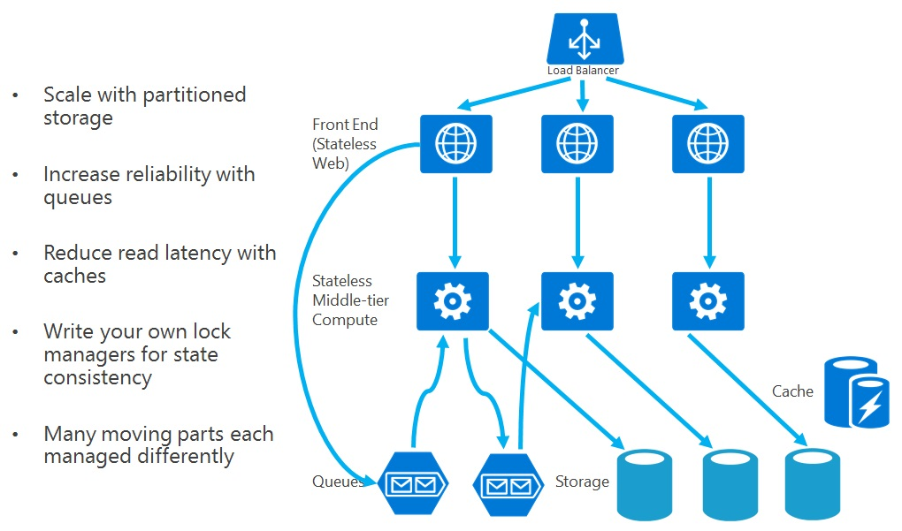

Services sans états

Quand vous développez un service, il faut veiller qu'aucune requête ne dépende de la réponse d’une autre.

Exemple :
Votre service gère le panier dans un e-commerce. Vous pouvez être
tenté d’implémenter le fonctionnement suivant :
- Un service externe appelle le vôtre en ajoutant un produit A pour le client Robert, puis fait un autre appel pour ajouter un produit B pour le même client.
- Vous gardez ensuite en mémoire une session qui gère le panier de cet utilisateur de façon à ce que quand le client souhaite passer la commande, le service externe vous passe la simple requête “commander”. Comme vous avez tout ce qu’il faut en session, il suffit d’enregistrer la commande.
Votre service a donc maintenu une session en état pendant une période assez longue, et le service externe comptait sur cet état précis pour passer la commande.
Un des inconvénients de cette approche est que si vous avez 2000 clients sur la boutique, vous saturez la mémoire vive avec 2000 sessions actives. De plus, votre service doit rester actif pour maintenir les sessions ce qui réduit la scalabilité du système : en d’autres termes on aimerait pouvoir ajouter des instances de votre service et en supprimer en fonction du trafic, sauf que comme votre service a un état, il est difficile de supprimer une de ces instances sans perdre des paniers par exemple.
Solution : quand un service externe demande à ajouter un produit A au client Robert, il suffit d’enregistrer cette donnée dans le système de gestion des données (base de données par exemple) et de retourner l’id du panier. Quand le service externe souhaite ajouter un autre produit ou passer la commande, il est de sa responsabilité de vous passer l’id du panier sur lequel il faut faire l’opération. Ainsi n’importe quelle instance de votre service peut répondre à une telle demande, votre service est donc stateless.